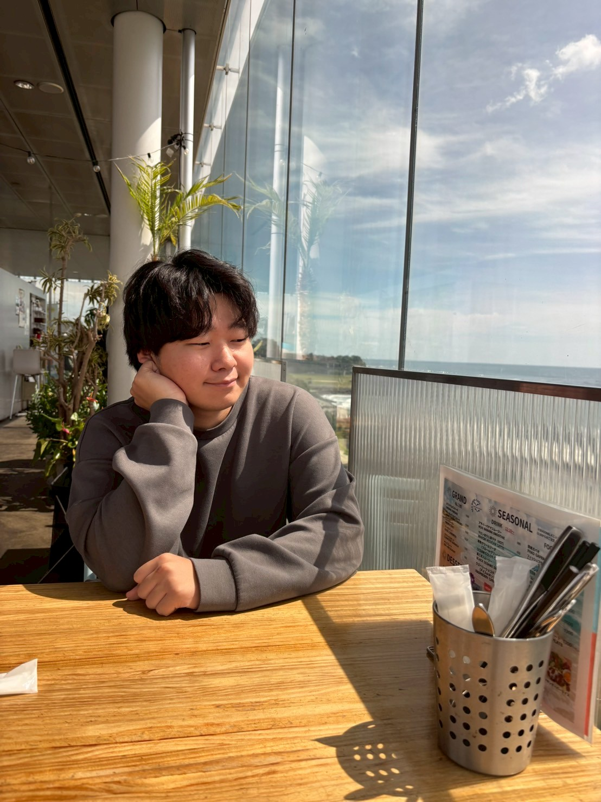

SAGAMIHARA, KANAGAWA
佐々木健仁 ／ たけ

神奈川県相模原市を拠点にする個人事業主。携帯キャリアの販売応援スタッフの事業を収益基盤にしながら、将来は全国各地で観光事業を企画・プロデュースする仕事を本業にしていくため、地域・不動産・発信の現場を広げています。仕組みで参加のハードルを下げ、人の選択肢を増やすことがテーマです。
目指すこと
将来作りたいのは、一つの地域に留まらず、全国の地域を飛び回りながら、その土地ならではの観光体験や旅行プランを形にする会社です。
観光スポットを並べるのではなく、地域の歴史・文化・暮らしを組み合わせて、新しい旅の理由を作る。企画と地域との関係づくりには自分が直接関わり、日常の運営は地域の事業者や提携先と分担する形を目指しています。
事業
-
携帯キャリアの販売応援スタッフの事業｜収益基盤
携帯キャリアの催事における販売応援スタッフの事業。スタッフの育成も含め、現在の収益基盤として運営しています。合同会社イプシロン・ラボでは営業担当として、提携企業の営業支援も行っています。
-
地方創生・観光｜将来の本業
観光に寄せた仕事を、将来の本業として育てています。地域の事業者が続けられる形で、宿泊・飲食・体験へ人が流れる仕組みを作ることが関心の中心です。現在は地域おこし協力隊への応募も含め、一地域で観光商品と集客を検証する実績づくりの段階です。
-
DX・業務支援｜観光の武器
地域事業者向けのDX伴走支援。予約受付・LINE公式アカウント・決済まわりの整備に加え、経理作業のアウトソーシング受託（記帳代行中心）や情報システム支援も行います。観光の現場で使える武器として育てています。
-
動画編集｜観光PRの手段
地域や事業の魅力を伝えるための表現手段として、動画編集を習得中。観光PRに使える編集力を育てています。
-
アオハル旅｜発信・検証基盤
「知らなかった日本に、出会う。」
地域の魅力と実用的な旅行情報を届ける、若者向けローカル旅メディア。有名な観光地より、知らない街の日常や、小さな路線の旅を発信しています。観光プランの反応を検証する基盤でもあります。
プロフィール
2003年生まれ、神奈川県相模原市周辺が地元。大学時代に旅行サークルを創設し、300名規模まで育て、200名規模のイベントも企画・運営しました。その経験から「旅は人の選択肢を増やす」という考えが活動の芯にあります。
2023年3月に個人事業を開始。携帯キャリアの販売応援スタッフの事業を続けながら、不動産と地方の仕事へ軸足を広げています。
考え方
余裕→自由→主体性→個性・熱中
自由とは、何もしないことではなく、自分で考え、選び、その選択を引き受けること。
AIや自動化で生まれた余剰は、関わる人の負担を下げたり、体験を良くしたりするために還元したいと考えています。
リンク・相談
アオハル旅のInstagram @aoharutabi